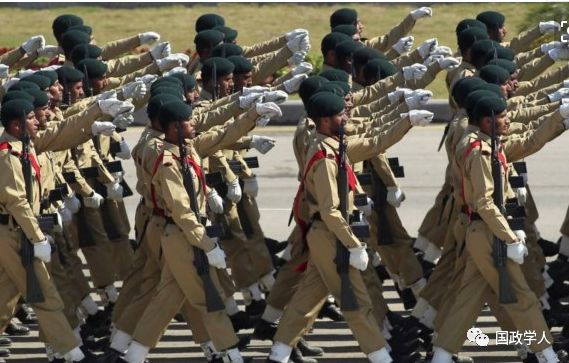

收录于合集

简 介
【作者简介】
杨恕，兰州大学中亚研究所教授
李亮，兰州大学马克思主义学院博士生
【文章来源】 外交评论2018年第1期
【整理 】 高嘉琳
【审核】 李逸成 庞林立
内容提要
在 2017年6月阿斯塔纳峰会上，上海合作组织给予印度与巴基斯坦正式成员国身份，实现了成立后的首次扩员。对处于发展关键期的上合而言，成员国数量的增加、活动区域的扩展，将对其内部权力结构、利益模式、合作空间以及整体发展前景产生深远影响，而印度在上合内即将扮演的角色尤受瞩目。全面评估印度在上合的利益诉求，充分认识扩员的挑战与机遇，积极探索上合迎接挑战、把握机遇的路径，是上合现实发展的迫切需要，也是对扩员相关质疑的必要回应。而构建一条关于上合决策与研究的新思路，则是中国学术界应有的理论自觉。本文系统梳理了印度与上合及中亚成员国的互动过程，对印度谋求“转正”的现实诉求和战略意图 进行了深入分析。面对扩员后的新形势，上合应着重从经贸合作、安全合作以及调解成员国冲突等三个方面进行自我调适与提高，为组织本身创造新的发展动力，并为所有成员国构建一个在欧亚地区合作共赢的空间。作为对上合扩员最为敏感的成员国，中国除协同与引领其他成员国参与上合的调适之外，还应发掘扩员在国际制度发展、地区融合与中俄印三边互动等方面带来的机遇，发展出一种超越国别与短期利益的全新的上合决策与研究路径。
【关键词】 上海合作组织、扩员、中亚、印度、巴基斯坦、合作共赢、中印关系
正文

2017年6月8—9日，在哈萨克斯坦首都阿斯塔纳召开的上海合作组织（下称“上合”）元首理事会第十七次会议上，印度与巴基斯坦经理事会会议批准正式成为上合成员国，这标志着上合历经曲折与争议的首次扩员终于尘埃落定。此次扩员是处于关键发展期的上合做出的重大战略决定，而印度的特殊身份增加了这一决定的重要性与复杂性。作为欧亚事务的积极参与者，印度与中亚存在深厚的历史渊源和现实利益关系，与上合主导国之一的中国在中亚地区的“竞合”态势十分明显，又与俄罗斯有着长达近半个世纪的密切军事政治关系。同时，它与一同加入上合的巴基斯坦处于长期的紧张与对立之中。因此，中印、印俄、中俄、印巴、中巴等多组双边关系将在上合这个多元多边主义”的机制内形成更加复杂的博弈关系。此外，印度还是美国在亚洲的盟友，美国在欧亚地区推行“新丝绸之路”计划时将印度视为主要合作伙伴。考虑到上述种种因素，以及印度在申请加入上合时的摇摆态度和多重利益诉求，可以想见， 以扩员为新起点，上合将迎来成员、地域、地缘政治影响力和地区合作空间等方面的重大拓展，也会进入一个较长的适应与探索期。
以印度加入上合的过程和动机为基础，为上合与中国提供相关政策建议以更好地渡过适应期，具有两个层面的价值。就 组织层面 而言，扩员会使上合现有的 成员国利益多元问题 更加突出，而印度的特殊身份，包括印巴的紧张关系及印中的竞合态势，则会进一步加大上合协调利益与达成决策的难度。准确界定印度的诉求、有效弥合新老成员的利益分歧，寻找共同立场，扩展合作领域，进而催发专属的身份认同感，将有助于上合在扩员后走上“巩固和壮大的坦途”而非“松散和衰弱的岔道”。作为对上合扩员最为敏感的成员国，中国在认知与处理扩员影响时也面临多重视角与任务。上合2010年开始酝酿接收新成员国标准时，中国因担心影响力被稀释等原因并不积极。诚然，扩员对中国在上合内的若干利益确会造成实际甚至较为强烈的冲击。扩员后仅一个多月，中印便在洞郎地区发生军事对峙，更使上合“添丁”的友好气氛大打折扣，也使国内对上合前景产生了一种微妙的消极情绪。但与此同时，扩员后的上合在中国的周边外交、地区战略和全球治理中也具有了全新的角色定位。中国刚刚接任2017—2018年上合轮值主席国，如何既维护中国在上合内的特定利益与话语权，又超越这种国别视角，发掘上合在国际制度建设、地区治理以及大国互动等战略层面的潜力，考验着决策者的外交智慧与战略眼光，相关研究也存在进一步深化与提高的空间。
鉴于以上考虑，本文 首先结合冷战后印度中亚政策的转变及特征，系统梳理印度与上合的互动史 ，包括首次接触、成为观察员国、间接表达“转正”意愿，到正式提出申请和成为成员国等一系列事件，以便厘清印度在此过程中表现出的若干特征及原因。然后 从现实与战略两个视角，分析印度加入上合的动机 。印度此举的现实动机主要是希望在上合内实现能源、安全、经济等方面的具体利益，战略动机则是以成员国身份平衡中国在上合及中亚的影响，对冲中亚地区大国博弈和力量对比变化所带来的风险，制衡巴基斯坦在该地区的力量增长。在此基础上，本文 拟从经贸与金融合作、安全合作与冲突管控等三个方面，提出上合调适自身、实现新老成员国互利共赢和共同发展的途径 。文章最后 尝试从国际制度建设、中亚与南亚跨地区整合与治理以及中俄印 “战略三角”互动等方面，就中国突破传统上合研究路径、构建一种基于地区与国际视野的全新研究思路提出一些初步想法。
一、 印度与上合的互动过程
要理解印度加入上合的重大意义，必须回顾它与中亚悠久的交往历史。对中亚的关注，是印度在上合成立初期就积极与之接触的根本原因。而推进中亚政策时遇到的瓶颈与困境，则驱使印度排除诸多疑虑，与上合一步步走近。故 印度与上合的互动史，在很大程度上是印度与中亚国家交往史的有机组成部分 。历史上，印度与中亚关系中最引人注目的事件，就是出生于乌兹别克斯坦的巴布尔完成军事远征后在印度建立了著名的莫卧尔王朝。16—17世纪是莫卧尔帝国的鼎盛时期，印度与中亚的商贸往来与文化交流十分密切。进入殖民时代后，印度与中亚分别成为英国与沙俄在欧亚地区进行“大国博弈”的阵地，它们的交往也打上了大国竞争的烙印。20世纪后半叶，印苏关系因1971年《印俄和平、友谊与合作条约》的签署而空前紧密，但中亚各加盟共和国作为苏联的地方行政单位并无外交权，因此印度与它们的交往从属于印苏关系，主要体现在电视、音乐、电影等大众文化领域，政治与经济接触甚少。直到冷战结束，印度与中亚各国才开始了现代民族国家间的正常邦交。
虽然印度自认为在中亚拥有“历史记忆、文化近似性和政治同情心”等优势，但1991—2001年，它在中亚的存在感比较弱。苏联解体将印度的外交布局全盘打乱，印度不得不集中精力处理与俄罗斯、美国、巴基斯坦以及南亚国家的关系，没有把中亚放在外交战略的主要位置。其中亚政策的主要目标是通过发展与中亚各国的关系，压缩巴基斯坦在中亚的战略空间，对巴形成某种意义上的战略包围。此外，由于经济衰退等原因，印度虽然与中亚五国签订了多项经济与安全合作协议，但双方均无力进行后续投入，建设配套的合作机制、过境设施和运输网络，因而协议大多停留在纸面上，未得到全面落实。因此， 印度学界普遍认为，在冷战结束后的十年中，印度虽然恢复了与中亚的基本联系，但对中亚的重视程度不足，且未能充分发挥自身优势，以至于从与中亚有着悠久历史与文化联系的自己人，变成了中亚 “新大国博弈”的“后来者”。1998年的 核试验 ，为印度扭转在中亚的不利局面提供了观念和战略上的强大动力。印度的民族主义情绪空前高涨，呼吁将目光投向周边地区，向中亚等“延伸邻国”和“大周边”区域5扩展。新上台的人民党也认识到，中亚对印度推行周边外交、实现大国抱负具有重大价值，因而更加务实和主动地规划中亚战略。此外，中亚丰富的能源资源、广阔的消费市场，也对经济快速发展的印度产生了直接吸引力。“9·11”事件后美国发动的反恐战争，使阿富汗与中亚的 地缘战略意义 骤增，从外部强化了印度深度介入这一地区的意愿。
正值印度对中亚的观念与战略发生全面转型之际，以中亚为地理和战略中心的上合宣告成立。印度意识到，上合将不可避免地成为中亚地区的重要国际行为体，并与印度在该区域的行动产生交集，借助上合促进印度在中亚的利益成为印度的一种较优选项。因此，在上合成立两个月后的2001年8月，印度便向到访的哈萨克斯坦总统纳扎尔巴耶夫表达了对上合的兴趣。2002年6月，印度驻俄罗斯大使在接受采访时称，印度完全支持上合的各项规则，并希望加入这一组织。俄罗斯当即表示欢迎。2004年，上合颁布《上海合作组织观察员条例》，次年印度被接纳为观察员国。该《条例》规定，观察员国对于上合的任何会议只有列席而无表决权，对任何文件和协议只有获取而无起草和签署权。对于上合职能范围内的问题，观察员国可使用上合工作语言发表书面声明，但这些声明只有宣传作用，对上合无法产生实质性影响。这显然满足不了印度深度参与中亚事务的需求，它开始谋求正式成员国的身份。
由于上合内部已于2006年达成默契，暂停接收新成员国，印度在寻求成员国身份时采用了一种较为迂回的办法。它没有像巴基斯坦和伊朗那样按规定向上合秘书处提交申请，而是直接向各成员国的外交部长发送官方信件，表明加入上合的愿望。这种做法被证明是有效的。2010年，上合出台《上海合作组织接收新成员条例》，打开了纳新的大门。自此之后，印度代表团在每年上合元首理事会会议、政府首脑会议等重要场合都会表达对成员国身份的兴趣。印度外交部长克里希纳在2011年上合峰会上表示，他与上合其他成员国的外长就印度转正一事一直保持着交流，并得到了“积极回应”，印度的加入将显著提升上合的价值和地位。2014年，上合杜尚别峰会通过《给予上海合作组织成员国地位程序》和《关于申请国加入上海合作组织义务的备忘录范本》修订案，完成了扩员的所有法律准备。印度随即正式向上合提交“转正”申请，并立刻获得批准。2015年7月，上合郑州峰会启动接收印度与巴基斯坦的程序，2017年上合阿斯塔纳峰会完成所有程序，印度与巴基斯坦成为正式成员国。
从成为观察员国到成功“转正”的12年中，印度表现出诸多区别于其他观察员国的行为特征。比如，虽然早有转正的意愿，但它一直没有正式向上合提交申请，而是与各成员国的外交部进行双边沟通。直到2014年，上合制定好扩员的政治标准及法律程序，完成所有的内部协调后，印度才正式提交申请。这种做法使印度的转正之路虽然历时较久，但十分顺利，从未遭到拒绝或拖延，外界认为这是印度维护自己“大国虚荣心”的心机之举。除了这种面子工程，印度另外两种做法尤其让人深思。
第一， 与巴基斯坦的迫切相比，印度在申请加入上合时表现出行动上的保留和心态上的摇摆。 《观察员条例》规定，观察员国向上合派出的代表级别应与上合成员国代表级别相当。但在2005年成为观察员国后，印度向上合元首理事会和政府首脑理事会派出的代表团团长一直是外交部长甚至石油部长，行政级别长期低于其他观察员国。2009年，俄罗斯特意将上合峰会与金砖国家峰会安排在同一城市叶卡捷琳堡举行，印度因此“破例”派出总理辛格参加了两次峰会。几个月后在中印俄三国外交部长会晤的联合公报中，中国和俄罗斯两国外长对此表示满意，称“欢迎印度对上合组织活动的建设性参与”。但在次年的塔什干峰会，印度又恢复了仅派出部长级代表参会的做法。2011年11月，上合圣彼得堡峰会与在马尔代夫举行的南亚区域合作联盟(SAARC)峰会在时间上重合，辛格选择参加后者。2014年峰会是上合公布接收新成员国程序、正式启动扩员的里程碑事件，蒙古、伊朗、阿富汗等观察员国均派总统出席，印度代表团的团长仍由外交部长担任。2015年，俄罗斯再次将上合峰会与金砖峰会安排在同一城市举行，莫迪再次出席两次峰会。也就是说，在成为上合观察员国的十年中，印度仅有两次派出最高领导人参加上合峰会，而且都是由于俄罗斯的刻意安排和迁就，而非印度的主动选择。
除了政界的保留做法，印度学界及媒体在印度是否应该加入上合这一问题上也不乏质疑和反对的声音。印度外交家、前驻哈萨克斯坦大使阿肖克揣测，中国虽未直接否决印度的申请，但通过在上合内设置障碍、提出反对等方式，阻挠和延迟了印度的加入。他还认为，中国可能以加入南亚区域合作联盟作为接收印度加入上合的交换条件，印度对此应予以坚决抵制。还有学者担心，印度加入上合后，将受到中国的种种掣肘。印度学者康纳称，中国会把印度当成“小伙伴”，要求它跟随中俄等“前辈”的步伐。英国伦敦大学国王学院印裔学者哈什·潘认为，上合的所有成员都支持中国的“一带一路”建设，而印度是唯一的异类。以前，印度还能用俄罗斯的支持来平衡中国的立场，加入上合后，这种支持可能就不存在了，因此，加入上合对印度的实际益处并没有印度预计的那么多。著名外交家、学者斯多丹也认为，与中亚的地理距离以及中国在上合的主导地位，决定了印度在上合的影响力比较薄弱。印度不应急于加入上合，而应利用观察员国身份继续观望，保留充分的战略空间与筹码。还有学者建议印度另起炉灶，组建一个全新的、涵盖中亚地区所有重要行为体的地区组织，并在其中扮演领导者角色。
表—1 上合组织历年峰会各观察员国代表团团长身份比较
年份
|
印度
|
巴基斯坦
|
其他观察员国
—|—|—|—
2005
|
外交部长
|
总理
|
伊朗第一副总统
蒙古总理
2006
|
石油天然气部长
|
总统
|
均为总统
2007
|
外交国务部长
|
外交部长
|
均为总统
2008
|
石油天然气部长
|
总理国家安全顾问
|
伊朗总统
蒙古外交部长
阿富汗总统
2009
|
总理
|
总统
|
伊朗总统
蒙古第一副总理
阿富汗总统
2010
|
外交部长
|
总统
|
伊朗外交部长
蒙古总统
阿富汗总统
2011
|
外交部长
|
总统
|
伊朗总统
蒙古总统办公厅主任
阿富汗总统
2012
|
外交部长
|
总统
|
均为总统
2013
|
外交部长
|
总理国家安全顾问
|
均为总统
2014
|
外交部长
|
总理国家安全顾问
|
均为总统
2015
|
总理
|
总理
|
伊朗副外长
蒙古总统
阿富汗总统
2016
|
总理
|
总统
|
均为总统
2017
|
总理
|
总理
|
均为总统
资料来源：笔者根据上海合作组织网站资料整理。
印度政府与学界对于上合的犹疑态度，大体出自两方面的原因。 首先，与上合进行接触的同时，印度与美国的战略伙伴关系也迅速升温。 阿富汗战争的爆发使美国提高了对印度在阿富汗与中亚地区作用的评级，2005年推出的“大中亚计划”更是对印度委以重任。与新成立、前景不明且由中俄主导的上合相比，该计划雄心勃勃，以阿富汗为中心，旨在将中亚与南亚整合成一个统一的地缘政治板块，促进两个地区在各个领域的互通，且明确将印度当作在南亚的主要合作伙伴。因此，无论从目标的一致性、与印度的相关度还是所谓的价值取向来说，“大中亚计划”都比上合更符合印度的期待。此外，该计划具有制衡上合的色彩，诸多细节也流露出分化甚至肢解上合的意图。从这个意义上说，美国不会允许印度在它与上合之间左右逢源。因此，印度选择积极配合美国的战略，对上合保持观望也就不足为奇了。 其次，除了追随美国，印度对自身推行的 “北望政策” （ Look-North policy）也寄予厚望。 强烈的民族主义倾向使印度渴求在中亚拥有符合其大国追求的影响力，不愿完全依附于他人。21世纪初出台的“北望政策”，就是印度自主发展与中亚的双边关系的核心政策手段。其标志性工程是印度与俄罗斯、伊朗于2002年5月共同发起的国际南北运输走廊（INSTC）倡议。该倡议旨在打造一条长达7200公里，集铁路、公路与航运于一体的运输通道，促进人员和物资在中亚与印度、伊朗、俄罗斯及欧洲之间快速流通。此外，印度与中亚各国在经贸、能源、军事等领域的双边合作也取得了明显的进展。它与哈萨克斯坦在民用核能领域、铀原料供应和合作开发里海油田等方面，与塔吉克斯坦和乌兹别克斯坦在水电合作方面，与土库曼斯坦在天然气贸易方面，均签署了一系列合作协议。最引人注目的是印俄塔三方于2003年就重修塔吉克斯坦艾尼空军基地达成协议，印度有望在此部署至少12架“米格-29”战斗机。对此，印度舆论十分振奋，认为印度可能因此成为“中亚军事基地大竞赛”强有力的竞争者。与此同时，印度与中亚国家的经济交往也已取得明显进展。2009年，印度与中亚五国的双边贸易总额已从2000年的8991万美元增至5.19亿美元。
但2010年左右，印度学界在回顾冷战后20年印度的中亚政策时却发现，随着形势的变化，“北望政策”的几大战略目标均以失败告终。其具体表现为：虽然印度在中亚的实力比以前略有增强，但远远落后于中国，只能坐视中国成为中亚经济生活的支配者。多个连通中亚的重大基础设施建设项目都停留在纸面上，印度与中亚的地理阻隔没有任何实质性改善。投入巨资改造已接近完工的艾尼空军基地在2007年被塔方叫停，印度以此基地为跳板向中亚投射军事影响力、打击阿富汗恐怖活动的期望落空。还有学者认为，印度政府对“北望政策”的真实执行情况没有客观认识，而是偏向于自夸自满，甚至存在“编造神话”和杜撰的现象。印度在中亚的现有影响力不仅无法与俄、美、中等大国比肩，甚至逊于土耳其、伊朗、日本和阿联酋。2010年，上合在较为突然的情况下出台《接收新成员条例》，可能与印度对“北望政策”感到失望、转而向上合发出积极信号存在一定联系。不过，印度并未放弃与中亚的直接接触。它于2012年出台“连接中亚”政策，从战略布局、执行手段与投入资源等方面对其中亚政策进行了全方位的升级换代。
第二， 在与上合接触的过程中，印度十分倚重与俄罗斯的双边沟通 。冷战后印度的中亚战略本就深受俄罗斯影响。除了叫停艾尼基地以惩罚印度实行武器进口多样化之外，俄罗斯对印度在中亚的大多数行动持支持和认可态度。包括推动印度与俄白哈关税同盟及后来的欧亚经济联盟签订自贸区协议、与印度联合筹建国际南北运输走廊、邀请印度加入集体安全条约组织（CSTO），这些都是俄罗斯想将印度拉上“欧亚博弈桌”的表现。印度加入上合的过程，也体现出俄印的这种默契。2002年印度首次明确表达加入上合的意愿，便是由印度驻俄大使向俄方单独提出的。在2005年接收四个观察员国后，上合内部曾达成共识，此后将以提高效率和完善制度为主，暂不考虑扩员。俄罗斯也赞同这一做法。但随着中国在上合影响力扩大，俄罗斯的态度开始发生转变，支持扩员的倾向越来越明显。在2008年上合杜尚别峰会上，俄罗斯力促成立特别专家组研究接收新成员国问题，打破了上合在扩员上的暂停状态。在2010年上合塔什干峰会召开的两周前，俄罗斯驻印度大使亚历山大·卡达金在接受印媒采访时称，俄罗斯的立场一直是希望印度成为上合的正式成员。他说：“虽然目前新成员国的标准还没制定好，但我们相信印度会符合新成员国的全部要求。”随后举行的塔什干峰会发布了《接收新成员条例》，时任俄罗斯总统梅德韦杰夫在会上称，“一些大国的加入”总体上符合上合的利益，有利于提高其威望，这里所称的大国，明显是指印度。此外，俄罗斯学界也不遗余力地宣传印度加入上合的好处，比如增加上合在国际社会中的合法性、促进中亚的经济发展、实现阿富汗的稳定、帮助解决印巴冲突等。
从一定意义上说，印度加入上合是在俄罗斯的主导和掌控下进行的，印度也在多个场合表达了对俄罗斯的感谢之情。在2016年金砖国家峰会上，莫迪高度评价了印俄在各大地区与国际组织中的密切协作。他说：“（印俄）在联合国、金砖国家组织、东亚峰会、G20和上海合作组织等组织内的密切协作，使我们的伙伴关系在规模和范围上都实现了真正的全球化。”2017年月访俄斯间，莫迪再次感谢普京“积极支持”印度成为上合成员国。他说：“印度和俄罗斯之间有信任关系。在国际舞台所有问题上，印俄总是站在一起。”印俄之所以能在上合内外形成这种配合，一方面基于两国因 长期密切军事技术合作而建立的高水平政治互信 ，另一方面也由于它们 在中亚及上合内存在明确的共同利益，即平衡中国影响力 。这是现阶段俄罗斯在中亚和上合的主要利益，印度的参与无疑能帮助它实现这一诉求。而印度舆论对加入上合的质疑大多围绕中国展开，也体现了印度对中国在中亚及上合内主导地位的不安。应对中国带来的压力，与实现在中亚的其他现实利益与战略目标一道，成为印度与上合逐步靠近的动力。
二、 印度加入上合的动机
（一）三大现实动机
国内外学界对印度加入上合现实动机的研究已有丰硕成果。大体而言， 解决阿富汗问题 、 推动地区反恐进程 以及 加强与中亚各国的联系 ，是促使印度加入上合的主要动因。
第一， 以阿富汗为中心，管控地区安全隐患 。阿富汗是印度与中亚之间的战略要地，也是印度北部领土安全的最大隐患。确保阿富汗成为南亚与中亚的商业通道与桥梁，而不变为恐怖主义与极端主义的大本营，不仅是印度的核心国家利益，也是上合各成员国共同追求的目标。在阿富汗战争期间，除了积极为美军与北约提供后勤、情报和军事培训等方面的辅助支持，印度还开展了很多独立行动，如在中亚开设军事医院，为北方联盟提供医疗保障、装备与财政支持。2001—2015年间，印度向阿富汗提供了共计20亿美元的资金支持和安全援助，在亚洲国家中排名第一，全球排名第五。它还通过举办阿富汗国际投资者会议，参与印美阿三方协商机制、印中关于阿富汗问题的双边对话、印中俄关于阿富汗问题的三边对话以及印度—伊朗—阿富汗交通走廊等途径，尝试在阿富汗的战后重建中发挥更大作用。
进入后撤军时代，阿富汗政权结构与社会局势再次面临变动，塔利班势力重新抬头，对本地区的安全与稳定构成挑战。而印巴敌对、大国博弈等多重因素，使阿富汗事务的参与方各自为政，无法形成合力，甚至相互消耗。一个成熟的多边治理机制此时显得尤为重要。将阿富汗事务视为核心议程的国际组织包括北约主导的“和平伙伴关系”计划、集体安全条约组织和上合，多边对话机制则有伊斯坦布尔进程等，其中上合的优势十分明显。上合包含了除土库曼斯坦之外阿富汗的所有邻国，且有较为系统的反恐与安全合作机制，也与阿富汗建立了机制化的沟通渠道。它有意愿也有能力整合地区资源、改善地区安全破碎化现状，成为阿富汗重建和地区和平进程中的关键角色。印度早已注意到上合的潜力以及由此给印度带来的机会。在2012年上合北京峰会上，印度外长克里希纳曾表示，上合为相关国家商议阿富汗事务提供了一个难得的地区性平台，其经济项目也为阿富汗重建带来了深远影响，他期待印度能够通过上合实现对阿富汗人民的承诺。此后每届峰会，印度代表均与阿富汗代表进行场边会晤，表达印度继续向阿富汗提供坚定支持的意愿。扩员后，印度有望与中、俄、阿富汗及中亚国家在阿富汗问题上开展更多更务实的双边和多边合作，上合的多边框架则可以为这些合作的顺利进行提供充足的制度保证。
第二， 以地区合作为核心，提高本土反恐能力 。由于宗教矛盾、民族对立、地区发展失衡与领土争端等问题，印度近年来深受恐怖主义活动之害。从1994年到2017年底，印度共有25044名平民与10041名安全人员因恐怖袭击死亡。其中，孟买、新德里、旁遮普省及查谟和克什米尔的印控地区遇袭次数最多，袭击规模也最大。针对印度实行恐怖主义活动的组织大多发源于本土，流窜于克什米尔地区，它们的资金和武器来源日趋国际化、隐秘化，导致印度当局的反恐行动收效甚微。近年来，上合在地区反恐合作上取得了明显成效，其常设的地区反恐机构（RATS）主导发起了联合反恐演习、大型国际活动安保、情报交流会议与打击网络恐怖主义联合工作小组等众多合作机制，且拥有较高的制度化水平与丰富的实战经验。早在担任观察员国期间，印度便多次向上合提出合作意向。在2010年峰会上，克里希纳称印度已准备好与上合地区反恐机构进行全面合作，以制定一个打击恐怖主义的共同战略。在2017年阿斯塔纳峰会上，八个成员国国家元首共同签署了《上海合作组织反极端主义公约》、《上海合作组织成员国元首关于共同打击国际恐怖主义的声明》以及《关于〈上海合作组织地区反恐机构理事会关于地区反恐机构2016年工作的报告〉的决议》，正式将印巴纳入上合的安全合作体系。在上合和地区反恐机构的统筹下，八个成员国有望制定更为完善的信息共享与联合行动机制，对本地区恐怖主义的源头、跨国联络及跨境流窜等环节进行监控和打击，以增强打击恐怖主义的行动效率。印度将是多边联动反恐的最大受益者之一。
第三， 以 “联通性”为核心，全面发展与中亚各国的关系。与中亚国家的地理距离，是印度获得能源资源和贸易机会的最大障碍。自中亚各国独立以来，印度先后提出了多种连通中亚的贸易路线，包括从乌兹别克斯坦，经阿富汗、巴基斯坦至印度的路线，从乌兹别克斯坦经伊朗与阿富汗至印度的路线，从中亚经中国新疆、西藏，至印度拉达克或喜马偕尔邦的路线，以及比较知名的国际南北运输走廊。印度甚至暂时放弃了绕过巴基斯坦的想法，计划将国际南北运输走廊与巴基斯坦、伊朗及中亚三方主导的、旨在连通中亚和海湾地区的阿什哈巴德协议（Ashgabat Agreement）进行对接。美国的“新丝绸之路”计划也充分考虑到印度的这一诉求。该计划的两个核心项目———中亚—南亚输电线路项目和土库曼斯坦—阿富汗—巴基斯坦—印度天然气管线项目———均着眼于印度最关心的中亚能源跨地区输送问题。莫迪还将提高与中亚国家的“联通性”视为印度中亚政策的首要任务。但迄今为止，除伊朗的查巴哈港已正式竣工外，上述其他计划要么停留在纸面上，要么进度严重滞后。原因之一是，印度无法筹集到大型基建项目所需的庞大资金，即使美国“新丝绸之路”计划推动的TAPI等项目也并非由美国直接出资，而是需要相关各国的政府、私营企业和地区发展银行共同筹措。融资之难与耗时之长使这些项目或陷入停滞，或进展缓慢。原因之二，则是跨地区基建项目往往涉及多国协调的问题，是借道伊朗还是中国?是否绕过巴基斯坦?如何保证过境阿富汗时的交通与管道安全?这些都是双边协调难以解决的。上合在促进成员国经济贸易发展的同时，明确将实现中亚各国之间及中亚与周边地区的互联互通作为基础。中国的经济实力能为这些项目提供财政上的保障，而上合则充当了一个多边协商平台，使相关国家的不同立场和利益得到充分协调。以能源领域为例，上合多个成员国一直呼吁建立“能源俱乐部”，将组织内的能源生产国、过境国与消费国纳入一个完整的利益链条。虽然俄罗斯与其他成员国对该俱乐部的作用存在意见分歧，但上合的多边协商机制加大了该俱乐部实现的可能性。因此，加入上合是一种“低成本的、加大印度在中亚影响力的办法”，尤其在与中亚的联通问题上，收益可谓立竿见影。
仅就沟通机会而言，上合提供的与中国、俄罗斯和中亚各国元首、政府首脑及部长等层级的多边会晤机制，对印度也很有价值。“连接中亚”政策使印度加快了与中亚各国的务实合作，但中亚事务从来不是某一个或两个国家能够决定的。在推动能源贸易、基础设施建设与安全合作时，双边渠道的局限性很大。而上合提供的多边、多层面的会晤机制，正好弥补这种不足。中亚事务的相关各方将在上合内部遵循统一的议事规则，利用多样化的会晤渠道，进行平等、密切且制度化的协商，有助于避免恶性竞争甚至零和博弈。对印度来说，这是它以前不曾拥有、当下迫切需要的。
（二）三种战略诉求
除上述三大现实利益外，印度加入上合的决定，也受到它 对地区大国地位的追求 、 与地区其他国家及域外大国的关系 等因素的影响。这些诉求较为隐蔽，极少出现在印度官方的公开表态中，但它们对印度加入上合发挥了关键作用。
第一， 防止中国在中亚 “独大”。无论是在双边关系中，还是在地区与国际舞台上，印度与中国之间的关系都具有复杂的“竞合”特征。中国国力的增强、在亚洲和国际社会中地位的提高，均使印度产生了一定的挫败感。在印度日益重视的中亚地区，中国与上合的影响力也在不断拓展，这更加重了印度的压力。2016年，印度与中亚五国的贸易额为9.52亿美元，中国与中亚五国的同期贸易额为300.3亿美元。在中亚能源领域，中国的投资金额和项目数量也占有较大优势，印媒感叹“印度的花费以百万计，中国的花费则以亿计”。两国企业还曾在哈萨克斯坦多起油田和石油企业收购案中同时竞标，结果多为中国企业胜出。在中亚的大国博弈金字塔中，中国与俄罗斯形成第一梯队，美国与欧洲各国形成第二梯队，印度则与日本、土耳其等构成第三梯队。第三梯队的特点是，在中亚地区存在安全、能源、经贸等利益，但又没有在任何一个领域获得强大的话语权，只能在大国博弈的缝隙中寻找机会。对于和中国在中亚的地位不对等，印度表现出强烈不安。对上合主张的多边协商精神，也有印度学者持怀疑态度，认为上合并未遵循多边协商原则，而是由中国主导，充当中国促进中亚利益的工具。
成为正式成员国后，印度将有机会稀释中国在上合及中亚的影响力。基于现行的决策机制，中国在上合的投票权重将从六分之一变为八分之一。同时，上合实行的是协商一致，即不以多数投票做决定的原则，这使中国关心的议题可能因为印度的反对而搁浅，印俄的密切关系加大了这一可能性。此外，印度还能近距离观察中国在上合框架内的政策与行动，并随时调整自己的策略，使之在应对中国时更具针对性和制衡力。正如印度战略家拉贾·莫汉所言，当中国在欧亚地区日渐强大、而美国对此无能为力时，新德里和莫斯科手里必须“有牌可打”。加入上合将增加印度手中的王牌，使中国“不能在欧亚心脏地带拥有自由支配权”。此外，印度还能寻求机会，实现从第三梯队向第二梯队甚至第一梯队的跳跃。
第二， 应对大国博弈的风险 。起源于金融学的“对冲”概念正被越来越多地运用于国际关系研究之中。对冲战略是指“国家在高风险、高不确定的条件下采取的一种战略行为，通过采取多种相反、相抵的手段来消解风险，以便在风云变幻的国际环境中保障自身的长远利益”。当前国际关系的对冲研究多与中国有关，比如东南亚国家处理对华与对美关系、美国的对华战略。印度也是运用对冲外交的高手。它虽然一直在追求大国地位，但按现阶段的综合国力衡量，仍处于中等国家的水平，因而，在外交上两面下注、对冲风险的做法，是印度实现自身利益最大化且保持战略灵活性的较优选择。
冷战后印度处理对美与对俄关系的方式是对冲战略的经典案例。苏联解体后，印度与俄罗斯延续了印苏时期的战略协作关系，印度不仅是俄罗斯武器的第一大买家，还获得俄罗斯首肯，在塔吉克斯坦的法克尔开办军事医院，继而实现军事部署。但印度在印俄关系中始终处于从属地位，议价能力较弱。最突出的例子是，由于俄罗斯武器存在质量缺陷、交付延迟等问题，印度在2000年前后决定尝试实现武器来源多样化，提高了从以色列、美国 和欧洲购买武器的比例，导致俄罗斯武器在印度武器进口总额中的比重从2002年的88%骤减至2005年的58%。俄罗斯立刻采取反制措施，先是叫停了印度在塔吉克斯坦艾尼空军基地的建设和部署，又主动拉近与巴基斯坦的关系。自2014年起，俄巴连续举行了三次大型联合军演。巴基斯坦还从俄罗斯购买了多架米-35武装直升机，苏-35战斗机的交易也已进入商议程序。在2016年金砖国家果阿峰会上，俄罗斯没有应印度的要求，就印控克什米尔地区内乌里镇军营遭袭事件对巴基斯坦进行谴责，使一些印度学者产生了“俄罗斯要抛弃印度”的忧虑。另外，印度也清楚地认识到，近年来俄罗斯的综合国力和在中亚的影响力呈下降趋势，仅靠与俄罗斯的双边关系，已无法保证印度在中亚的利益。因此，印度一方面与俄罗斯保持密切关系，另一方面采取更低调的方式继续加强与中亚各国的军事合作。如在2011年7月，印度国防部宣布将与吉尔吉斯斯坦合作成立一家军事研究中心，并为参与联合国维和行动的吉方士兵提供行前训练。印度认为，这种合作方式既能巩固与中亚的军事联系，又不至于刺激俄罗斯的敏感神经。
在处理与美国的准同盟关系时，印度也同样注重保持战略回旋余地。“9·11”事件后，美国大力支持印度在中亚获得更大影响力。“新丝绸之路”计划将印度置于各种基建项目和援助计划的中心位置，奥巴马政府的“重返亚太”战略更将印度定位为“制轮楔”（linchpin），美国政府官员在各种场合对印美关系不吝溢美之词，但是，印度并不全盘接受美国对它的角色设定。它一方面谨慎地在安全、贸易等领域配合美国，以实现它在亚太地区的战略抱负；另一方面又不断向中国释放信号，即印度无意成为美国遏制中国计划的一部分。比如，当美国防长帕内塔称印度是美国“重返亚太”战略的制轮楔时，印度国防部长安东尼当场回应称，美国在加强亚太地区多边安全体系时必须“让所有相关国家按自己舒服的节奏行动”。就在帕内塔访印的同时，印度派出外长克里希纳访问中国，称中印关系是印度外交政策的优先任务。在处理对美与对俄关系时，印度的平衡与对冲技巧一览无余。
加入上合是印度对冲战略在中亚事务上的最新运用。在中亚，所有国家都不可能摆脱其他国家的影响而单独行动，而大国之间的博弈始终处于动态发展之中。中亚局势因此具有高度不确定性，其走向很难预测。美国在中亚的影响力在“9·11”事件后急剧上升，但在2014年从吉尔吉斯斯坦玛纳斯军事基地撤出后显著下降。随着俄罗斯国力的变化，中亚也在逐渐褪去俄罗斯“后院”的身份，以更加独立的姿态参与本地区的博弈。印度想在中亚有所作为，又要避免在权力格局变幻中“站错队”，就必须走多面下注的道路。因此，印度既是美国“重返亚太”战略和“新丝绸之路”计划的主要合作伙伴，又想加入由中俄主导、发展势头良好的上合，既要借重俄罗斯促进在中亚的利益，又要在俄罗斯影响力持续走低时，为其中亚政策寻找新的战略支点。因中巴经济走廊涉及印巴领土争端而拒绝加入“一带一路”倡议，又想在上合的互联互通项目中分得一杯羹。事实上，印度意识到很难取代中国对上合的影响力，但又试图用成员国身份阻止中国在上合及中亚发挥主导作用。加入上合后，印度可以在多组复杂甚至对立的诉求中找到平衡点，撬动其整个中亚战略的继续提升。
第三， 防止巴基斯坦力量壮大 。在推行周边和大国外交时，印度始终将巴基斯坦视为其决策的关键影响因素，而印巴的中亚政策也以彼此为参照和对手。上世纪80年代，巴基斯坦齐亚·哈克将军提出将阿富汗与中亚当作应对印度的“战略纵深”地带，冷战后中亚地区出现的权力真空，为巴基斯坦实践这一理论提供了机会。依靠地缘上的毗邻、战略上的重视和同属伊斯兰世界等便利，巴基斯坦在中亚地区的影响力日渐增长，对此印度十分紧张，将巴基斯坦视为它与中亚进行深入合作的重大障碍和“阴影”。“9·11”事件后，巴基斯坦成为美国反恐的前沿阵地，并将主要精力用于反恐与维护国家安全等方面，在中亚扩大影响力的步伐明显放缓。印度则趁机推行其“北望政策”，拉开了与巴基斯坦在中亚的实力差距。
2005年，巴基斯坦与印度同时成为上合观察员国。外界猜测，基于在阿富汗问题上的特殊作用、加入上合的迫切心态以及与中国的友好关系，巴基斯坦成为正式成员国只是时间问题。在印度看来，如果巴基斯坦加入上合而印度被排除在外，印度将可能在中亚博弈、阿富汗事务和印巴关系中失去优势，更有可能坐视巴基斯坦利用上合平台、实现在中亚的战略纵深布局。因此，不论印度在上合的具体收益几何，防止巴基斯坦单独加入上合本身也是一个有价值的目标。在印巴同时加入上合的形势明朗后，印度战略学家莫汉认为，印度在上合的三大任务之一便是提防中国与巴基斯坦在上合内联手就克什米尔问题“偷袭”印度。依此逻辑推论，印度在上合若能全面推进与中亚五国的关系，也会谋求以此为手段，从背后对巴基斯坦进行战略包围。
如上所述，面对中亚复杂的地区局势和大国关系，印度为了追求在具体政策层面的三种利益，以及观念与战略层面的三个目标，以不算积极、但始终向前的节奏，逐步与上合接近，最终成为上合的正式成员国。
三、上合吸纳印度后的调适路径
扩充成员国对任何国际组织而言都具有重大意义，其结果往往是消极与积极并举，风险与收益共存 。在上合的案例中，印巴的加入会使上合内部利益更加多元，成员国协调一致更为困难，集体行动的困境也随之加大。但与此同时，它们也能极大地充实上合的经济与安全合作资源，拓展地区与跨地区发展潜力，为上合突破权力结构僵化、制度建设滞后、融资渠道缺失、多边合作难有建树等诸多瓶颈提供一种新的刺激，倒逼上合加速改革的进程。实现积极作用与收益、规避消极影响与风险，并化消极为积极、化风险为收益，是上合面临的考验。下文从经济与金融合作、安全与反恐以及调解成员国冲突等三个方面，就上合在扩员后如何自我调适提出一些初步的政策建议。
（一）加快印度融入上合经贸与金融合作的进度
将印度在中亚的经济诉求与上合在互联互通与多边经贸合作框架内的优势有机结合，促进双方互惠互利 。在印度纳入上合的经贸合作框架时，应从印度最为重视、且上合最为擅长的两方面下功夫，即交通上的互联互通与政策上的多边合作框架。在“连接中亚”政策的驱动下，印度发展与中亚经贸联系时可谓不遗余力，商业与工业部下设的“国际技术与经济合作”（ITEC）项目累计资助了数千名中亚各国的银行、金融、贸易、管理、医药技术人才到印度学习，印度商业与工业联盟商会（FICCI）在哈萨克斯坦、乌兹别克斯坦与吉尔吉斯斯坦等都设立了联合商业委员会。但印度国内主流观点认为，这些成果远远低于印度的预期与潜力。据哈萨克斯坦官方资料，印度与哈萨克斯坦2016—2017年贸易总额为6.42亿美元，超过印度与中亚其他四国同期贸易总额，但仅占哈对外贸易总量的1%。这种理想与现实的鸿沟出自多方面原因，缺少陆上交通运输网络、双边协商无法突破政策壁垒是关键所在。这正是上合发挥自身优势的好时机。
2016—2017年，上合在互联互通与区域多边合作两方面取得了重大进展。2016年10月通过的《2017—2021年上海合作组织进一步推动项目合作的措施清单》勾画了上合未来五年的区域经济合作蓝图，2017年1月生效的《上海合作组织成员国政府间国际道路运输便利化协定》明确把改善上合境内国际公路网络、建设新的国际公路作为未来一段时间的工作重点。下一步，上合将统筹研究贸易投资便利化的措施，为多边合作继续扫除政策障碍。印度2017年6月正式加入上合，因此并没有参与这些文件的起草与制定，但它在这两方面又存在着明确的诉求。上合应协同印度国内行政机构与立法部门，对这些纲领性文件进行更新，将印度的意愿纳入其中，并在日后的落实中更多地关注印度的需求。
近几年，因能源和大宗商品价格下跌，上合成员国普遍面临经济发展放缓的问题。2016年，俄罗斯与哈萨克斯坦经济均出现负增长，唯有中国和印度保持6%以上的增长率。如果印度与中亚的经贸合作能从上合的互联互通建设与多边合作便利化措施中受益，不仅能帮助中亚成员国找到新的经济增长点，印度也会更乐于发挥它在电子、科技、金融等方面的产业优势和市场资源，促进上合相关领域的合作水平。这将成为上合相较于欧亚经济联盟等其他欧亚地区经济合作组织的一个独特优势。上合发展银行的筹建也应该成为上合未来的一个重要议程。上合在推动成员国的互联互通和经贸发展时一直受制于融资渠道的短缺，多个项目进展缓慢甚至陷于停滞。中国与中亚各成员国呼吁建立上合发展银行为大型合作项目进行融资，但俄罗斯对此不太积极，该倡议迄今仍处于可行性研究阶段。印度对参与亚洲、尤其是欧亚地区的基础设施建设热情较高，也具备必要的经济实力。它的加入将使上合发展银行在获取俄罗斯支持、筹集启动资金以及进行高水平管理等方面增加更多把握。在这方面上合可以赋予印度更多责任，鼓励印度参与上合发展银行的筹备工作。这不仅能充分利用印度在金融行业的优势和经验，还能将印度纳入上合的经济合作框架，使其拥有“当家作主”的感觉，增进它对上合的认同。经济合作带来的红利，有助于弥合新老成员国在其他方面的分歧，为构建上合身份认同提供重要的物质支持。
（二）整合与扩展安全合作与反恐网络
在以观察员国的身份参加上合活动时，印度曾多次高度评价上合地区反恐机构的工作成果，双方的合作早在扩员前就已经启动。2015年，地区反恐机构与印度签署多份文件，建立了若干打击以“伊斯兰国”、“基地”为代表的国际恐怖主义的合作机制。2016年，上合要求印巴对机构下辖情报部门共426份重要文件进行分析和评估，为正式加入上合履行相关义务。在2017年阿斯塔纳峰会上，印巴签署加入了上合主要的反恐公约、条例与协议。但事关国家安全，且印度与中国尚存战略互疑，它融入上合安全合作框架的过程可能会面临来自国内的阻力。上合应鼓励印度加入上合联合反恐演习、边防联合执法巡逻、情报交流会议、打击网络恐怖主义联合工作小组等合作机制，在具体的行动中发现并解决问题，提高新老成员国的信任与协作水平。此外，上合还要注意协调印度与巴基斯坦在上合安全合作上的矛盾。印巴虽然面临相同的地区安全威胁，但由于双边关系紧张，除了共同参加联合国维和之外，两国安全部门鲜有合作。在参与上合框架内的安全合作时，两国必然会彼此防范，甚至产生抵触情绪。尤其当前的上合联合军演已从战术合练向战役协作转变，需要参与国进行混合编组、互换武器、互换指挥员等深度合作，这对仍处于对抗之中的印巴而言是很难实现的。在推动印巴融入上合安全合作体系时，上合不能急于求成，要尊重印巴在某些敏感信息分享和行动中保持距离的意愿，先行落实它们在非敏感行动中的配合，打消顾虑，提高互信，循序渐进，最终使它们在涉恐关键信息与行动中实现较高水平的合作。如能将印巴顺利整合到上合的安全合作框架中，并将地区反恐机构升级为“反恐中心”，上合的地区安全合作网络在深度与广度上都将获得质的提升，印巴紧张关系或许也能够得到一定程度的缓解。
（三）预防与协调成员国冲突
印巴对抗是上合扩员后最主要的风险来源 。中国外交部长王毅在2017年5月表示，希望印巴严格遵守《上海合作组织宪章》和《上海合作组织成员国长期睦邻友好合作条约》规定，相向而行，友好合作，秉持“上海精神”，改善双边关系。但是，期待印巴关系在上合内得到大幅改善是不现实的。从理论上说，要使组织拥有协调和解决成员国冲突的能力，成员国必须向组织让渡一部分主权，接受组织对其内政一定程度上的干预。但“不干涉内政”原则恰是“上海精神”的核心，因此上合现在没有、短时期内也不会尝试建立一个解决成员国冲突的机制，这也是它此前未投入精力协调中亚四国尤其是乌兹别克斯坦与其他中亚三国之间水资源、边界纷争等问题的主要原因。
就现实而言，印度与巴基斯坦两国原则上并不符合上合对新成员国“没有处在与其他国家的武装冲突之中”的要求。虽然它们通过签订协议等方式，承诺不将冲突带入上合议程，但从“转正”后两个月印度的表现就能看出，双方的敌对情绪一如既往。在阿斯塔纳峰会上，印度总理莫迪与巴基斯坦总理谢里夫在领导人会面环节进行了礼节性交谈。这是两位领导人17个月来的首次交流，很多人将其视为印巴关系有望在上合内改善的预兆。然而，印巴领导人并未安排任何单独会晤。一些印度主流媒体还用嘲讽性语言描述谢里夫的举止，称莫迪在峰会上“暗讽”谢里夫在阿富汗反恐问题上不作为，将谢里夫“逼入墙角”。还有媒体称，印度将利用上合这个平台，对巴基斯坦在反恐方面的“双重标准”进行曝光。基于此，有理由相信印度将在上合内以更隐秘的方式与巴基斯坦对抗，比如在担任轮值主席国时提出一些对巴不利的议程，阻止巴基斯坦推进自己关切的议题等。巴基斯坦也有可能采取同样的措施。这些做法并不违反上合的相关条例，但会引发对方的强烈不满，使组织陷入内部分裂的危险。备受外界关注的南亚区域合作联盟正是由于印巴对峙而陷入僵局，其殷鉴应引起上合的警惕。
目前还没有任何多边机制可以解决印巴之间的领土争端、边境冲突以及恐怖分子与武装分子跨国活动等问题。作为一个立基于加强边界地区互信的组织，上合既有调和国家间领土争端的历史经验，又已建立丰富的合作机制，还有中俄两国“坐阵”，虽然不能为印巴冲突提出终极解决方案，但它有望充当一个管控风险和斡旋冲突的平台。比如利用上合多层次、多领域的协商机制，为印巴双方提供众多的会面与接触机会，使互信不足的双方在友好的多边气氛下协调分歧与矛盾。利用丰富的经济与人文交流渠道，促进两国商界、学界等的相互交流，缓解民间情绪，改善整体氛围。在双方冲突激化时，上合可以秉持中立立场，积极展开斡旋，避免做出情绪化的应激反应，从而为冲突降温并开启后续谈判创造条件。2009年叶卡捷琳堡峰会批准了《上海合作组织关于应对威胁本地区和平、安全与稳定事态的政治外交措施及机制条例》，规定成员国在遇到重大安全事态时应该“磋商、协调立场和开展合作”。上合可将成员国之间的冲突也纳入“重大安全事态”的范畴，在此基础上探索建立一个综合性、制度化的冲突调解机制。东盟经过长期探索，通过立足防范、促进合作、有限介入三种途径，创建了一套开放性与弹性化的成员国冲突管理机制。这被认为是东盟能取得长足发展的原因之一，其经验也可供上合借鉴。
上合一直坚持不干涉成员国内政、不讨论成员国间冲突，但这种做法可能不适用于扩员后的新形势。应对印巴之间的紧张局面甚至低烈度对抗可能将成为上合的常态。一旦这些对抗加剧，上合不仅无法获得扩员带来的收益，连正常运行和既有合作也可能受到干扰。因此试图超然于成员国冲突之上、不触碰这些棘手问题，既是徒劳的，也是不明智的。上合在中印洞朗对峙期间的沉默和外界对上合无所作为的质疑就证明了这一点。只有主动建立成员国冲突调解机制，上合才能在冲突发生时快速反应、合理应对，降低冲突对组织的损害。而在调解冲突方面取得的任何成果，也会显著提高上合的凝聚力与国际威望。而该机制的最低目标就是避免上合内出现“常态的、固定的对立”。当然，冲突调解机制的建立不是一蹴而就的，需要一个长期探 索的过程。
在落实以上四个方面的措施时，上合应注意以下两对关系的平衡。第一， 在确保新成员国加入上合绝大部分核心规章与协议的同时，也应正视它们在某些问题上的特殊立场 。近年来，上合一直追求在重大国际问题上“用一个声音说话”，但在美国部署导弹防御系统、叙利亚问题、南海问题及“一带一路”倡议等事务上，印度的立场与上合其他成员国存在明显差异。2012年上合北京峰会的《上海合作组织成员国元首宣言》计划推动制定“防止在外太空放置武器、对外空物体使用或威胁使用武力条约”，印度认为这可能会限制印度的太空安全政策。此外，印度与巴基斯坦对于联合军演的顾忌和防备也不是短时间能消除的。所以，上合一方面应敦促印巴严格遵守《上海合作组织宪章》和《上海合作组织成员国长期睦邻友好合作条约》等一系列核心规范，在一些细节性、功能性的领域，也要允许成员国保留一定的自主空间，这也是上合决定扩员、收获扩员的诸多收益时需要付出的代价。
第二，在 促进新成员国利益的同时，保护原成员国的利益不受损害 。多个中亚成员国的学者都在推进上合扩员的过程中表达了反对立场。巴基斯坦是否会分散上合的反恐资源和经济援助?印巴冲突是否会使上合的重心从非传统安全领域转向传统安全领域?南亚的基础设施建设是否会分摊上合在中亚的预算?这些都是中亚成员国政府与民众关心的问题。这些国家奉行以利益为导向的多边外交政策，在大国外交和参与地区合作机制时，向来拥有众多选项，上合只是其中之一。上合应向它们表明，印巴的加入不会使上合的重心向南亚转移。上合将始终以中亚地区作为其地理和议程的重心，致力于为中亚与周边国家提供互动和谋求共同利益的平台。此外，上合还应增加融资渠道与力度，尽快落实与中亚的互联互通项目，为中亚各成员国提供丰富的经济合作机会与公共产品，防止它们因感到地位被削弱而倒向集安组织、欧亚经济联盟等其他组织。
四、中国的上合研究新视野
中国应如何看待上合扩员?扩员对中国在中亚、上合乃至欧亚地区的利益会产生何种影响?这是当前中国上合研究与决策关注的焦点。上合不是中亚参与地区合作的唯一选择，对俄罗斯而言也是补充性的，但它却是中国参与中亚事务不可或缺的机制，是中国致力于解决亚洲地区安全困境和经济发展问题的样板工程，也是“一带一路”倡议和“亚洲新安全观”、“亚洲命运共同体”等战略理念的重要载体。与其他成员国相比，中国在上合拥有更大的战略利益，对扩员带来的收益与风险也更为敏感，因而对扩员的认知与评估也拥有更多的视角与更复杂的维度。
以利益为导向，从不同视角与不同领域就上合扩员对组织本身及各成员国的风险进行评估是必要且迫切的 。对组织来说，扩员可能削弱上合的决策与行动效率，使作为远景目标的经济一体化更难实现，还会冲淡本就薄弱的集体身份认同感。印巴的紧张关系则会进一步提高这些风险。对中国而言，它在上合内的发言权可能会因新成员的加入而受到削弱，与中亚的商品和能源贸易也会面临来自印度的直接竞争。中印关系在洞朗对峙后的恶化则给上合的运行带来了更多变数。虽然在2017年9月的金砖国家厦门峰会上两国关系有所缓和，但这些风险依旧存在。可以预见，扩员后上合将开始一段长期且艰难的调适历程，中国在上合内的工作同样任重道远。为抵御扩员对中国影响力与话语权的冲击，中国在担任轮值主席国的一年中应掌握主动，积极评估与管控潜在的风险，维护与增进中国的利益。比如，推动上合对决策机制进行一定调整，使中国对上合的经济投入能转化为切实影响。提高在上合内设置议程的技巧和主动性，使中国关切的事务在上合的议程表上享有一定优先权。促成上合建立成员国冲突调解机制，并发挥一定的主导性，以确保这些机制既发挥作用又不至于影响中国这个潜在“被调解对象”的领土和战略利益。加快上合与“一带一路”等其他地区合作机制对接，使这些机制在资金、项目、产业和发展战略上形成一个相互联系、彼此促进的网络，从而强化中国在各个机制和整个网络中的地位。
但是，仅由风险与利益驱动的研究与决策思维无法充分反映扩员后上合战略价值的升级，也无法回应这种升级对决策与研究提出的更高要求。随着“一带一路”倡议向西向南加速推进，上合在中国外交战略中的载体、平台与模板地位更加突出。因此，一种超越短期得失与国别利益、着眼于长远和地区的战略视角应该被纳入决策与学术研究的范畴。换句话说，当前，西方的上合研究无论如何发展，其成果无法完全为我所用，因为它们不可避免地在价值取向上带有明显的西方色彩，在理论框架上偏重西方理论经验，在研究目标上则主要为西方利益服务。而中国的上合研究又存在理论化水平不高、低水平重复等问题，其研究视角多囿于就上合谈上合，就上合谈中亚，就上合谈中俄，与东盟研究进行比较时，这种议题的局限、视角的单一和理论化水平的不足则更加明显。扩员后，中国在上合的利益产生了诸多新内涵、新变化和新价值，传统研究与决策路径已不足以满足现实的需要。应该将上合放在国际制度发展、跨地区联动与整合、中俄印三角互动等宏大背景下，以新的研究路径与视域来响应新形势下的需求，促进上合决策与研究的升级。
从 **国际制度发展的角度出发，上合在扩员后有望弥补从初级阶段向中级阶段进阶时遭遇的 “政治合法性”不足与地区主义精神薄弱这两大内生缺陷。**自成立至今，西方学界对上合的质疑与唱衰如影随行，并突出表现在两个方面。 **第一，用 “专制国家俱乐部”的标签，否认上合的政治合法性，夸大它对西方的威胁，从而挤压上合在国际社会的活动空间;第二，用以同盟为基本理论元素的国际关系理论和以超国家融合为核心的地区主义理论来衡量“上海精神”，评估上合的发展潜力。**在上合的原则与实践无法套入固有理论框架时，便断定上合将沦为一个空淡馆甚至一出“空城计”。而在印度加入上合后，其“民主国家”的身份能证明上合无意将政治体制和意识形态作为挑选成员国的标准，而是秉持包容与开放的态度。这在一定程度上可以减小上合在西方语境中被赋予的对抗性、排他性，对上合缺乏政治正统的指责也会失去根基。此外，西方学术界的多边主义和地区主义理论大多基于一种要超越主权和民族国家的决心，但亚洲各国对地区主义的憧憬则带有鲜明的主权和民族国家特征。不同政治体制、经济模式与文化传统的八个国家在上合相遇，可以反驳那种试图把依西方经验构建的地区主义理论套用于所有地区主义合作的做法，并重新定义一种基于亚洲经验的“地区主义”：它基于上合成员国与欧亚地区的历史、社会经济环境、政治轨迹，能反映成员国在地区合作中的特定偏好，还有助于建立上合的新地区意识与新地区主义观念。依据新地区主义理论，“地区”的概念不是天生的，而是在全球转型过程中，由人类集体行动有意或无意创造、再创造和解构的。也就是说，区域共同体和地区认同感是可以被社会化建构的。如果上合顺利度过适应期，多边合作带来的经济与安全收益将会催生出成员国的共同体意识，而人文交流的跟进，则能进一步强化这种围绕上合而产生的身份认同。在这种情况下，上合的合作水平将有可能从“集体表达”向“统一行动”发展，组织本身则会成为“欧亚地区主义”精神的雏形，代表“非西方”语境下对跨地区多边合作框架的探索。这将是未来上合研究一个很有前景的领域。作为上合的创建国，中国从中获取的收益也十分可观。扩员的实现证明，上合现有发展成果对本地区国家具有强烈的吸引力，中国在其中发挥的作用不言自明。如果扩员后各成员国能在上合内实现有序协作和集体认同，则进一步证明中国在弥合多方分歧、引领地区合作等方面具备较强的能力。随着中国积极参与和主动构建地区与全球组织的步伐日渐加快，这种树立威望的机会是弥足珍贵的。即便上合在扩员后的合作中经历挫折甚至倒退，中国也能从中积累管理国际制度、协调多方利益的经验，这本身就是一个进步的过程。
若 从地区整合的角度考虑，上合实现了联通中亚与南亚这个本地区甚至域外国家的长久愿望 。如前所述，美国的“大中亚计划”、印度的“北望政策”都曾尝试从陆路基础设施建设、油气管道、电力线路等方面对这两个相对隔离却存在千丝万缕联系的地区进行整合，却未获得实质性进展。上合的议程核心与活动空间一直限定在中亚，但中亚国家向南寻找出海口与能源市场的诉求始终存在，联合所有利益相关方共同应对阿富汗问题也是上合近年的核心目标。扩员后，上合的地理跨度将从北极直至印度洋，面积占欧亚大陆的五分之三，人口则占世界人口的一半。它的多边合作框架可以打破中亚与南亚之间的地理与政治壁垒，对这一范围内的经济与安全资源进行高效整合与优化配置。跨地区能源运输系统、大型交通基础设施建设项目与多边商贸合作框架的规划与实施本就是上合的重要议程，中亚与南亚的联通会使这些系统、项目与框架在内涵上更加丰富，在外延上空前广阔。这两个地区在经济结构上的互补，则保障了上述合作不会流于空泛。虽然在如此广阔的区域内实现经济一体化仍遥不可及，但上合已在促进生产资源的自由流通方面迈出了关键一步。中亚与南亚的联通还会使上合在阿富汗问题上拥有更高的行动效率和更大的作为空间，而阿富汗局势的稳定则能使两个地区的联通更加便利、快捷与安全。
扩员后，中国、俄罗斯与印度将首次在一个地区性国际组织中相遇，这也使冷战后兴起的中俄印“战略三角”理念重回国际社会聚光灯之下。中国、俄罗斯与印度在中亚与上合的相遇具有地缘、历史和战略的多重必然性。就历史而言，中、俄、印均与中亚存在十分悠久的贸易、文化、宗教和政治联系，中国的“丝绸之路”、印度的莫卧尔王朝，以及19世纪沙俄与英国在中亚的“大博弈”，至今仍构成它们对中亚政策的历史叙事。就地缘而言，中亚位于欧亚大陆的腹地，中俄印虽然分别身处东亚、北亚和南亚，其周边区域延伸后的唯一交汇处便是中亚。建立和巩固在中亚的存在是这三个处于发展和复兴之中的大国构建周边安全屏障、对外投射影响力的必然选择。就战略而言，虽然中亚已不复麦金德所说的世界岛“心脏”的地位，但因丰富的能源、枢纽性位置及毗邻阿富汗等机缘，中亚仍是欧亚大陆的中枢地带，各大国在此发起的“新型大博弈”也方兴未艾。因此，中国与俄罗斯倡导建立了以中亚为核心的上合并投入大量资源促其发展，印度在通过“北望政策”推动与中亚关系的同时也未忽视与上合的互动，最终实现从观察员国到正式成员国的身份转变。
同处上合为中、俄、印的三边互动创造了一个历史性契机。自1998年时任俄罗斯总理普里马科夫首次提出中俄印“战略三角”一词，这一地缘战略构想就进入了三国官方语系，成为相关政策宣示和战略筹划的一部分。但三国之间的实质合作进展缓慢，重要原因之一就是缺乏一个制度性的合作平台。三国既缺乏建立这个平台所需要的高度互信，也担心这个平台可能触动其他国家的神经而为自己带来更大的战略压力。此次上合扩员，则为中俄印提供了一个现成的三边互动场所。三国将以上合的多边框架为制度平台，以上合的规章制度为行为准则，以上合的议程与项目为现实载体，进行多层次、多领域和高质量的互动，以建立互相谅解、高度信任、密切协作同时又保持灵活性和开放性的三边合作关系。如果三国在上合内的良性互动得以实现，可以纾解三国在中亚、上合乃至全球的战略竞争态势，缩小目标冲突，加深在决策上的协调与相互支持。这种良性互动还将产生外溢效应，对三国在地区和全球层面的关系产生深远影响。中俄正在积极推动中国主导的“丝绸之路经济带”与俄罗斯主导的欧亚经济联盟对接，并将上合作为重要的实施平台，这是一个很好的势头。
“上海精神”强调所有成员一律平等并遵循“协商一致”的决策机制，以防止出现一国利用强权控制组织议程、小国被迫跟随而利益受损的情况发生。但西方学界关于中国与俄罗斯两大寡头掌控上合的观念却十分顽固。中俄主动纳入印度这一地区与全球的重要行为体，标志着上合的包容与开放，也会使那些把上合视为中俄禁脔的刻板印象不攻自破。而中俄印三国在上合内的互动与协调，代表了处于西方体系之外的一个地区性组织正在进行国际关系民主化的新尝试。
五 【结语】
印度无法在上合之外独自追求在欧亚地区持续扩大的影响力，而上合也看到了印度在阿富汗事务、欧亚经济发展等问题上的重要价值。基于这种认识，双方克服了诸多阻力逐渐走近，完成了具有里程碑意义的双向选择。
在集中精力处理首次扩员影响、消化扩员收益的同时，上合与中国必须谨慎对待下一次扩员。2017年阿斯塔纳峰会元首理事会已经研究了伊朗的成员国身份问题，中俄也在多个场合表示支持伊朗加入。但目前第一次扩员的影响还在不断显现，上合的应对仍处于探索之中。如果启动第二次扩员，三个新成员国对上合的同时冲击可能使局面更为复杂。而且，塔吉克斯坦对伊朗加入持明确的反对态度，如果接收伊朗，上合内部又将增加一对彼此存在对立情绪的成员国。从长远来看，上合可能会日趋松散和低效，并逐渐偏离其预设的目标和轨道，进而从一个地区安全与经济的务实合作机制，沦为务虚性质的清淡馆。因此，上合先处理好印度与巴基斯坦的加入，实现一段时间的稳定发展，并系统总结首次扩员经验后再考虑下一次扩员，可能是一种相对明智的做法。
扫描下方二维码查看原文pdf
更多阅读
国政学人 （ID：guozhengxueren)
为方便学人及时阅读高质量文章
别忘把国政学人设置 星标 哦~